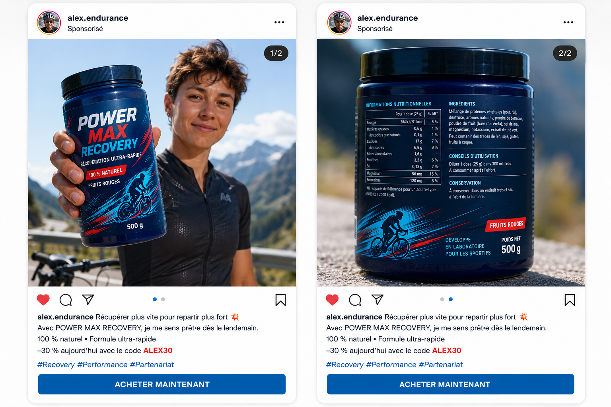

PRO-CYCLEAN · ENQUÊTE · MODE INDIVIDUEL
Le produit mystère
Inspecte un complément alimentaire, repère les signaux d’alerte et adopte les bons réflexes.
Ta mission
Mène l’enquête sur POWER MAX RECOVERY
Un coéquipier te recommande un nouveau complément alimentaire appelé POWER MAX RECOVERY. Il affirme que ce produit l’aide à mieux récupérer après ses entraînements.
Avant de décider si tu peux l’utiliser, examine le produit, repère les informations importantes et identifie les éventuels signaux d’alerte.
Avant d’inspecter le produit
Commençons par le besoin de Sami
Sami se sent fatigué après plusieurs entraînements. Un coéquipier lui recommande « POWER MAX RECOVERY ».
Avant d’évaluer un produit, il faut d’abord évaluer le besoin. Une fatigue peut avoir différentes causes : entraînement, récupération, sommeil, alimentation ou problème de santé.
Sami ne réalise pas lui-même un diagnostic : un professionnel compétent peut l’aider à évaluer la situation.
Inspection du produit
POWER MAX RECOVERY
Observe la publication, puis utilise la loupe pour lire les détails du produit.

Les 7 zones à examiner
Sélectionne chaque zone pour enregistrer ton observation.
Information observée
Classement des indices
Comment classes-tu chaque indice ?
Pour chaque indice, choisis la catégorie qui te paraît la plus adaptée. Tu peux modifier tes choix avant la validation.
Correction
Ce que révèle l’enquête
Compare ton analyse avec les repères pédagogiques. Plusieurs indices peuvent se renforcer : une décision ne repose jamais sur un seul élément.
Décision finale
Après son enquête, que devrait faire Sami ?
Choisis la conduite qui te paraît la plus adaptée.
La conduite à adopter